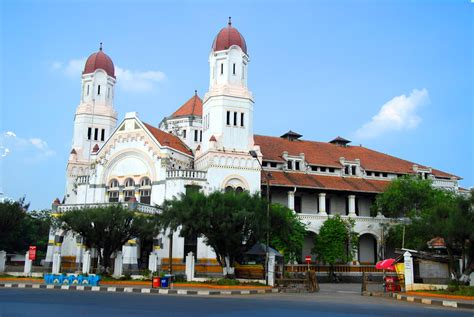

Tentang kota Semarang

Semarang merupakan kota metropolitan kelima terbesar di Indonesia.
Kota ini terkenal dengan keunikan budaya, sejarah kolonial, dan keanekaragaman kulinernya.
Tempat wisata populer
-
Lawang Sewu
 -
Kota Lama Semarang
-
Sam Poo Kong
-
Masjid Agung Jawa Tengah
Kuliner Khas Semarang
- Lumpia Semarang
- Tahu Gimbal
- Wingko Babat
- Bandeng Presto
Data Populasi Kecamatan di Semarang
| Kecamatan | Populasi |
|---|---|
| Tembalang | 95.000 |
| Pedurungan | 88.000 |
| Ngaliyan | 78.000 |
Format Teks
Kota Semarang dikenal dengan Kekayaan budaya, arsitektur kolonial, dan wisata kuliner yang menggugah selera